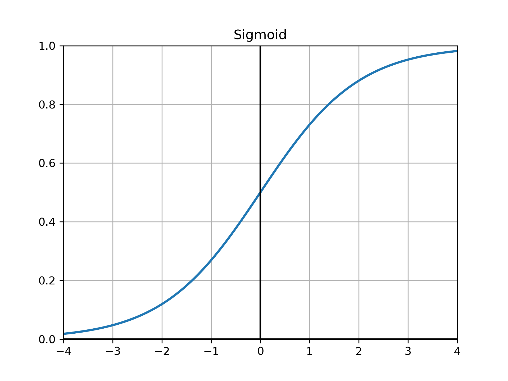
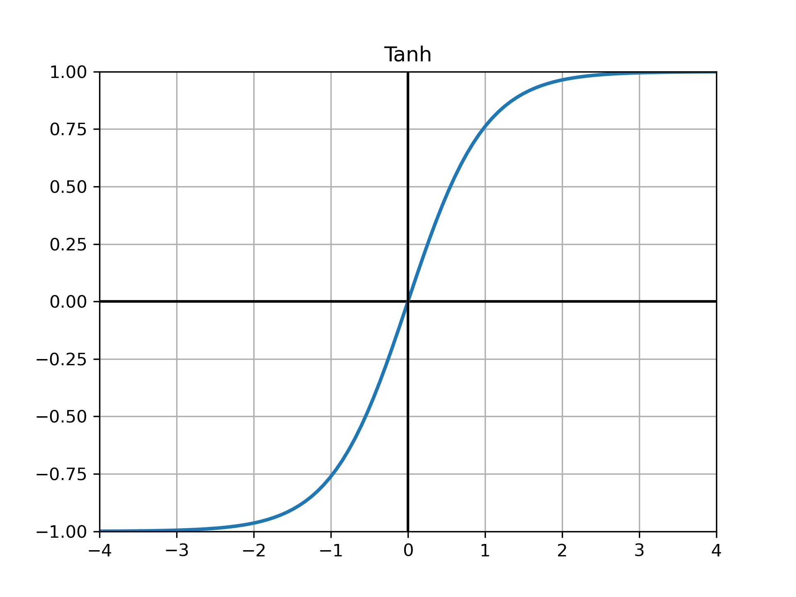
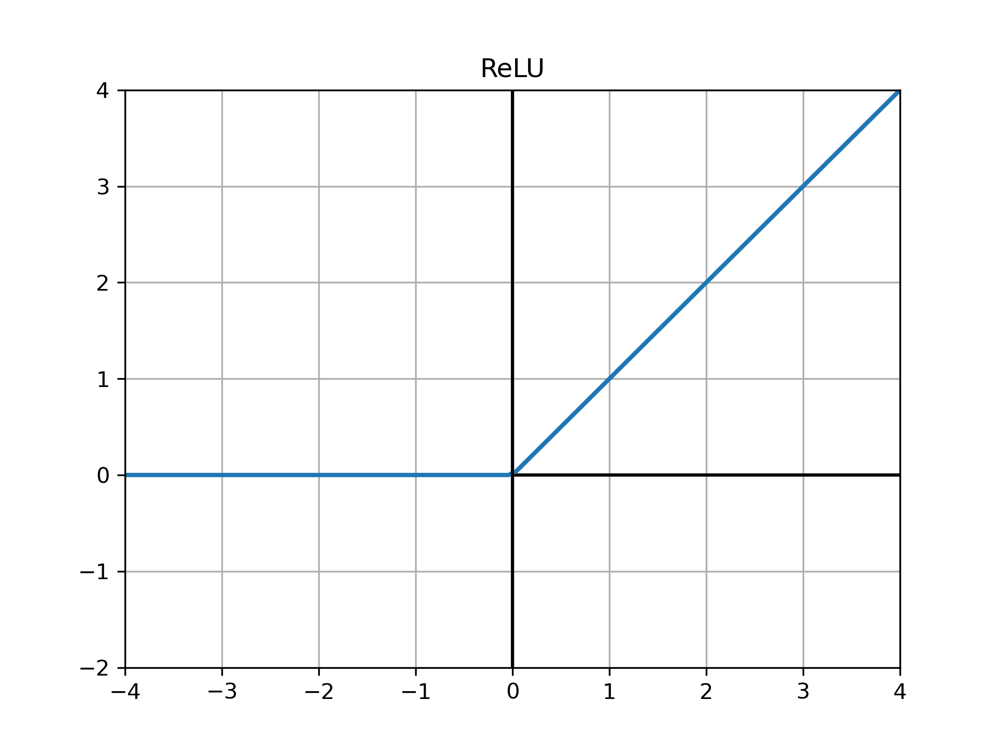
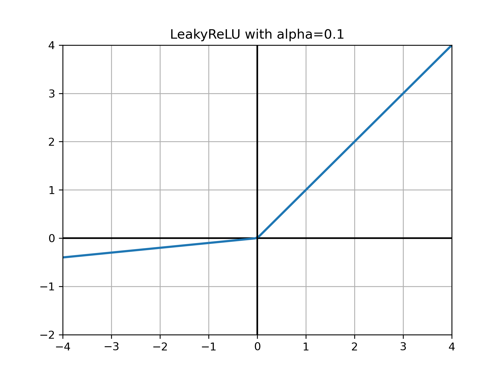
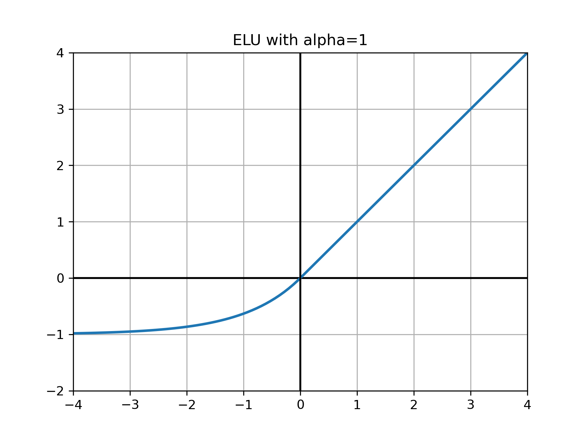

激活函数#
Note
激活函数负责将非线性特性加入到我们的神经网络中
对于深层网络，梯度消失和梯度爆炸是常见的问题
选择合适的激活函数可以抑制梯度消失和梯度爆炸，加速训练
梯度消失和梯度爆炸#
反向传播中梯度的递推公式：
$$\frac{\partial L}{\partial \mathbf{z}^{[l]}} = \frac{\partial L}{\partial \mathbf{z}^{[l+1]}}\mathbf{W}^{[l+1]} \odot {g^{[l]}}’(\mathbf{z}^{[l]})$$
梯度是层层相乘的关系。
若相乘系数的绝对值普遍小于1，那么很多层之后便会出现梯度消失
若相乘系数的绝对值普遍大于1，那么很多层之后便会出现梯度爆炸
上面的公式中会乘以激活函数的导数，因此激活函数的导数的绝对值不能过小或者过大。
常见的激活函数#
Sigmoid#
以前的default，绝对值大的点的导数趋于0，因此用它的话容易出现梯度消失
$$\mbox{Sigmoid}(x) = \frac{1}{1 + e^{-x}}$$
{kind=link}
Tanh#
还是容易梯度消失
$$\mbox{Tanh}(x) = \frac{1 - e^{-2x}}{1 + e^{-2x}}$$
{kind=link}
ReLU#
可以抑制梯度消失和梯度爆炸，梯度也很容易计算，是现在的default
$$ \mbox{ReLU}(x) = \begin{cases} x\quad&\text{if}\ {x > 0}\ 0&\text{if}\ {x\le0} \end{cases} $$
{kind=link}
LeakyReLU#
ReLU的变种
$$ \mbox{LeakyReLU} = \begin{cases} x\quad&\text{if}\ {x > 0}\ \alpha{x}&\text{if}\ {x\le0} \end{cases} $$
{kind=link}
PReLU#
带参数的ReLU，它将LeackyReLU中的超参数 $\alpha$ 变成了一个可以学习的参数 $\theta$
$$ \text{PReLU}_{\theta}(x) = \begin{cases} x\quad&\text{if}\ {x > 0}\ \theta{x}&\text{if}\ {x\le0} \end{cases} $$
ELU#
指数线性单元
$$ \text{ELU}(x) = \begin{cases} x\quad&\text{if}\ {x > 0}\ \alpha(e^{x} - 1)&\text{if}\ {x\le0} \end{cases} $$
{kind=link}
In Pytorch#
from torch import nn
nn.Sigmoid()
nn.Tanh()
nn.ReLU()
nn.LeakyReLU(negative_slope=0.02)
nn.PReLU()
nn.ELU(alpha=0.5)
ELU(alpha=0.5)